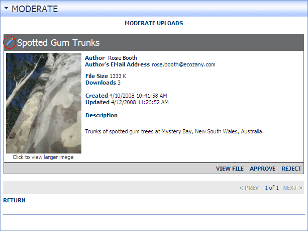

Editing and Approving an Item
How to edit and approve an item awaiting moderation on the Repository module.
- Click the MODERATE button. The number of items awaiting moderation is displayed on this button.
- Optional. To View File click the VIEW FILE link. You may like to view the file before approving it.
- Click the Edit
 button to the left of the item title.
button to the left of the item title.
- Edit one or more fields as required.
- Click the UPLOAD button.
- Click the APPROVE link. An approval notification will be emailed to the author's email address.
- Repeat Steps 3-6 to edit and approve additional items.

Editing and Approving an Item